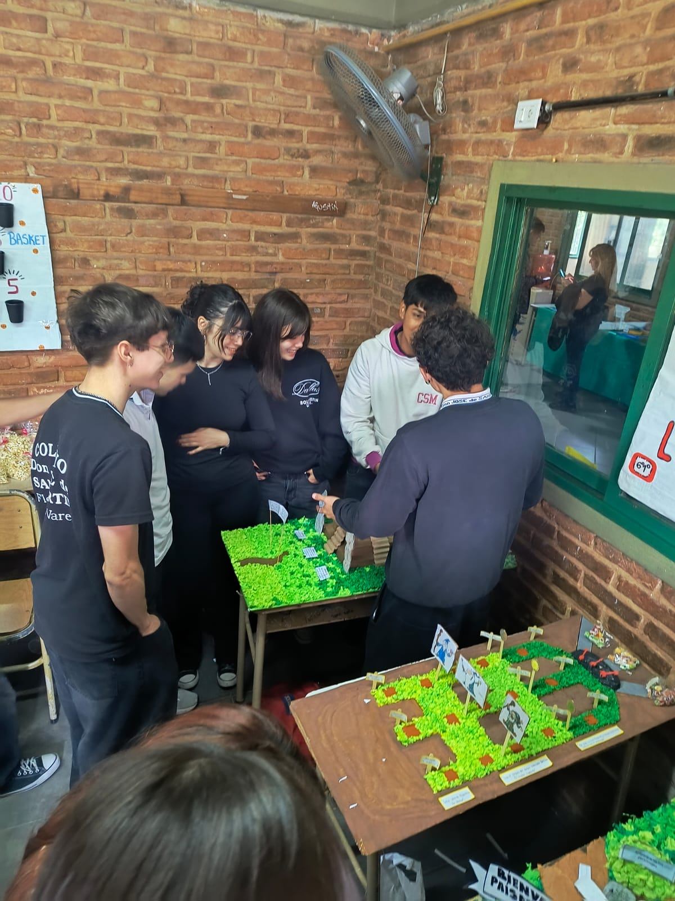
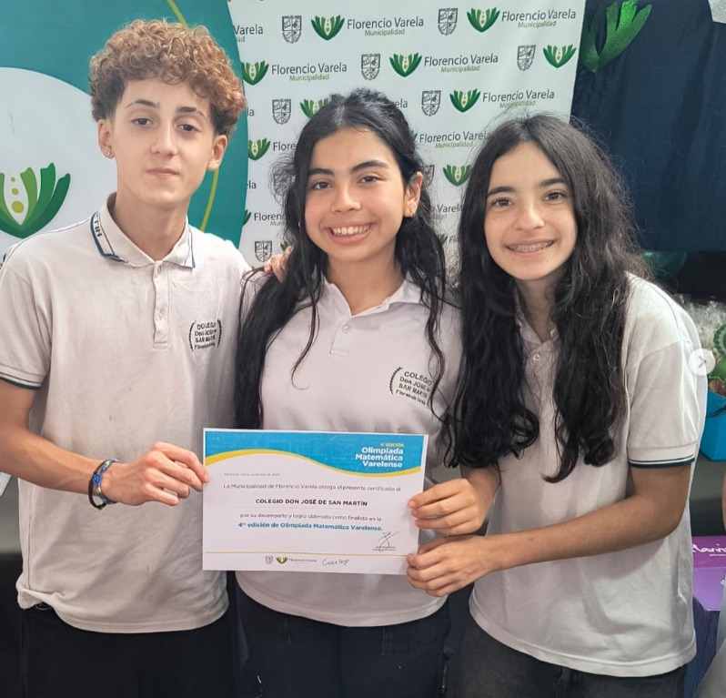
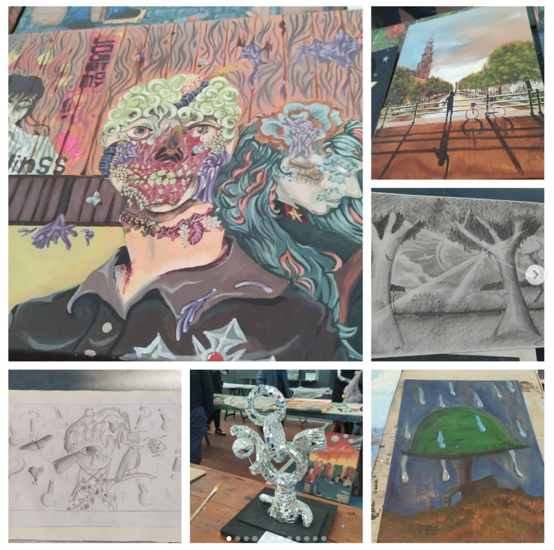
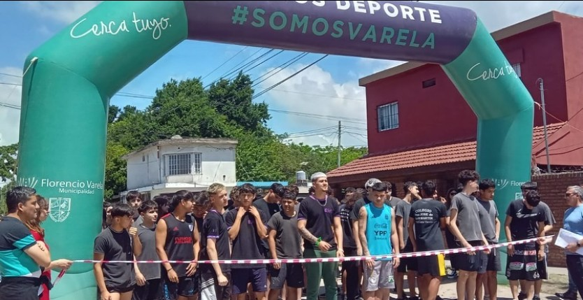

CIENCIAS
Naturales
Explorando el mundo.

Un espacio donde cada niño descubre su potencial, fortaleciendo valores y excelencia académica.

Explorando el mundo.

Desafíos lógicos.

Expresando talentos.

Vida saludable.
Profesionales especializados en pedagogía primaria para un seguimiento personalizado.
Espacios equipados para la experimentación directa en ciencias y tecnología.
Ambiente cálido y respetuoso que fomenta la integración de todos los niños.